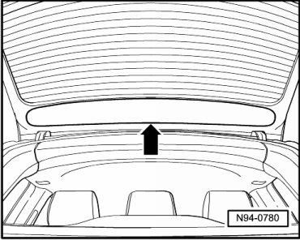
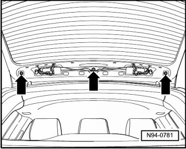
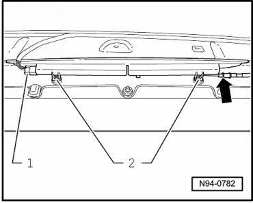
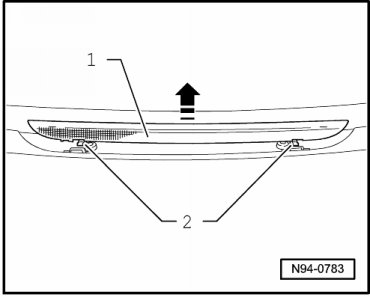

Brake Lamp: Service and Repair
High-Mount Brake Lamp
• Washer nozzle of rear window wiper is a component of High-mount Brake Lamp (M25) and cannot be adjusted.
• If spray nozzle sprays unevenly or does not spray the wiper area, replace High-mount Brake Lamp (M25) with spray nozzle (repair measure).
Removing
- Switch off ignition, switch off all electrical consumers and remove ignition key.
- Release cover - arrow - from locking mechanisms.

- Remove nuts - arrows -.

- Lift rear spoiler with High-mount Brake Lamp (M25) and disconnect 2-pin harness connector - 1 -.

- Disconnect hose connection - arrow - to wash of rear window wiper.
- Store the rear spoiler with High-mount Brake Lamp (M25) on an appropriate surface.
- Remove bolts - 2 -.
- Clip High-mount Brake Lamp (M25) - 1 - in - direction of arrow - out of locking mechanisms - 2 -.

Installing
Install in reverse order of removal, noting the following:
• When installing rear spoiler with High-mount Brake Lamp (M25), make sure that hose (Velcro connection) to wash of rear window wiper and line (Velcro connection) to High-mount Brake Lamp (M25) are fitted properly.